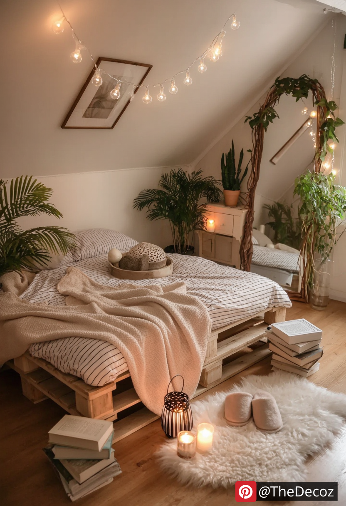
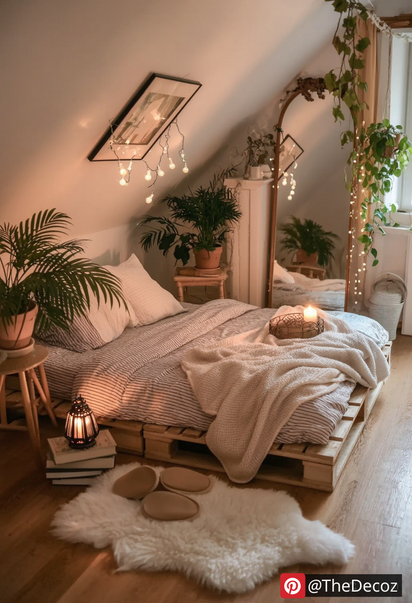
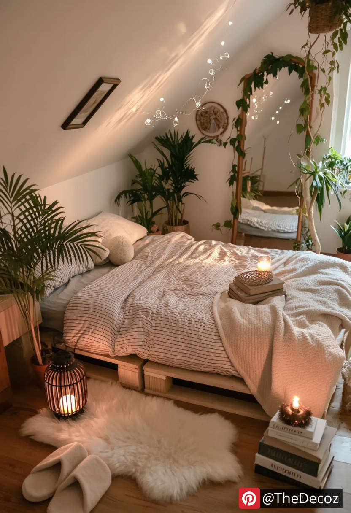
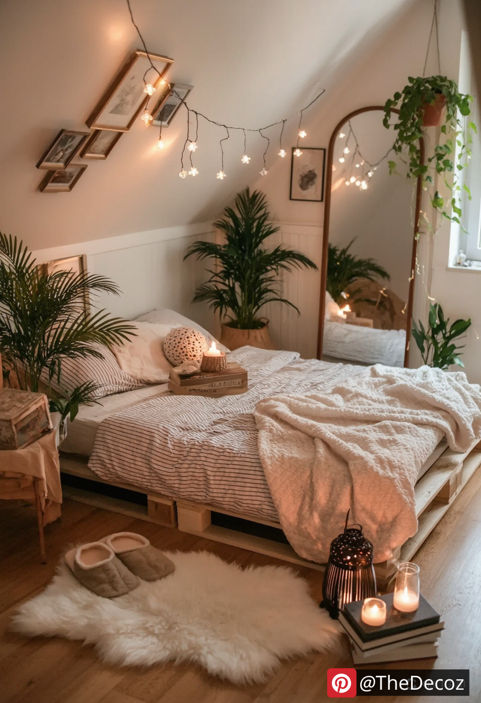
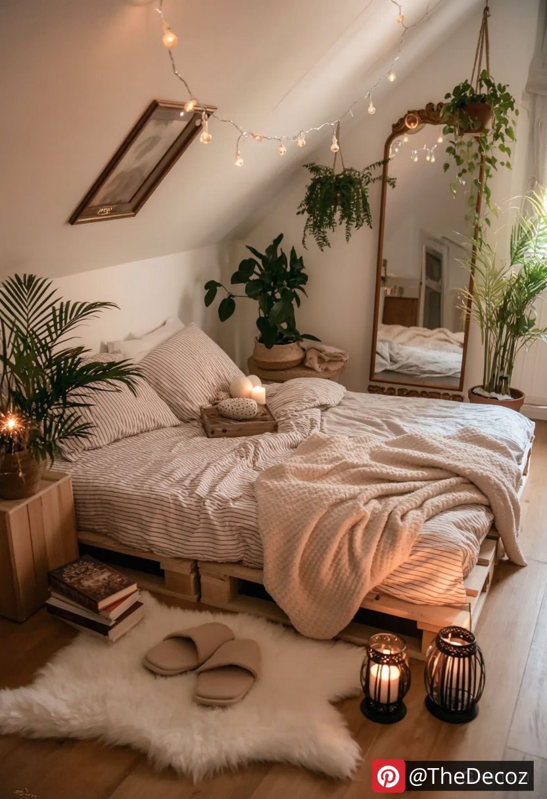

In the world of interior design, creativity and sustainability are becoming increasingly important. One of the most innovative and eco-friendly trends that has emerged in recent years is the use of pallet beds. Not only do they offer a unique aesthetic, but they also provide a budget-friendly solution for those looking to revamp their bedroom. In this article, we will explore various room decor pallet bed ideas that can transform your space into a cozy and stylish retreat.
Pallet beds are made from wooden pallets, which are often discarded after transporting goods. By repurposing these materials, you not only contribute to environmental sustainability but also add a rustic charm to your bedroom. Here are some reasons why pallet beds are a great choice:
Cost-Effective: Wooden pallets are usually inexpensive or even free, making them an ideal option for budget-conscious individuals.
Customizable: Pallet beds can be easily customized to fit your personal style and the dimensions of your room.
Unique Aesthetic: The raw, unfinished look of pallets adds character and warmth to any space.
Easy to Build: With minimal tools and skills, you can create a stunning bed frame in just a few hours.
For those who appreciate simplicity, a minimalist pallet bed is the perfect choice. This design features a low-profile frame made from a few stacked pallets, creating a sleek and modern look. Pair it with neutral bedding and a few decorative pillows to maintain a clean aesthetic. Add a small bedside table made from a single pallet for a cohesive look.
If you prefer a more traditional bed height, consider an elevated pallet bed. By stacking pallets and adding legs, you can create a sturdy frame that allows for under-bed storage. This design is perfect for small spaces where maximizing storage is essential. Use decorative boxes or baskets to keep your belongings organized and out of sight.
Enhance your pallet bed by adding a custom headboard. You can create a headboard using additional pallets, painting or staining them to match your decor. Alternatively, consider using fabric or upholstered panels for a softer look. This addition not only provides a focal point in the room but also adds comfort when sitting up in bed.
For a playful and unique design, try a multi-level pallet bed. This idea involves stacking pallets at different heights to create a tiered effect. This design is particularly appealing for children's rooms or guest rooms, as it adds a fun element to the space. Incorporate colorful bedding and playful decor to enhance the whimsical vibe.
Combine functionality with style by creating a pallet bed with built-in storage. You can design the bed frame with drawers or open shelving on the sides. This is an excellent way to keep your room organized while maintaining a chic look. Use the storage space to display books, plants, or decorative items that reflect your personality.
Embrace the rustic charm of farmhouse decor with a pallet bed that features a weathered finish. Use reclaimed wood pallets for an authentic look, and pair the bed with vintage-inspired bedding and accessories. Incorporate elements like mason jars, burlap, and wooden accents to complete the farmhouse aesthetic.
For a bohemian vibe, decorate your pallet bed with vibrant textiles and eclectic decor. Layer colorful throws and patterned pillows to create a cozy and inviting atmosphere. Add string lights or hanging plants around the bed to enhance the boho feel. This design is perfect for those who love to express their individuality through their decor.
Choose Quality Pallets: Ensure that the pallets you use are in good condition, free from splinters, and treated for safety.
Sand and Finish: Sand the pallets to remove rough edges and apply a finish or paint to protect the wood and enhance its appearance.
Secure the Structure: Use screws or brackets to secure the pallets together, ensuring stability and safety.
Consider Mattress Size: Measure your mattress before building the frame to ensure a perfect fit.
Room decor pallet bed ideas offer a fantastic way to combine style, sustainability, and functionality in your bedroom. Whether you prefer a minimalist design or a more elaborate setup, pallet beds can be tailored to suit your personal taste and space requirements. By embracing this trend, you not only create a unique sleeping area but also contribute to a more sustainable lifestyle. So, gather your materials, unleash your creativity, and transform your bedroom into a stylish sanctuary with these innovative pallet bed ideas!
    